import numpy as np
import matplotlib.pyplot as plt
from scipy.stats import normLecture 2 - Multiple Testing
Introductory demo on probability density
n = 2000
X = np.random.normal(0, 1, n)
bin_width = 0.05
bins = np.arange(-3, 3 + bin_width, bin_width)
## plot the histogram
weights = np.ones(n) / n
plt.hist(X, bins=bins, color='blue',
edgecolor='black', linewidth=1,
weights=weights)
plt.yticks(np.arange(0, 0.5, 0.05))
plt.xlabel('x')
plt.ylabel('Proportion')
plt.show()
## plot the discretized density
weights = weights/bin_width
plt.hist(X, bins=bins, color='blue',
edgecolor='black', linewidth=1,
weights=weights)
plt.xlabel('x')
plt.yticks(np.arange(0, 2, 0.1))
plt.ylabel('Density')
# overlay beta density
xs = np.linspace(-3, 3, 1000)
pdf = norm.pdf(xs, 0, 1)
plt.plot(xs, pdf, color='red', linewidth=2)
plt.show()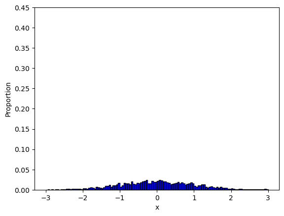
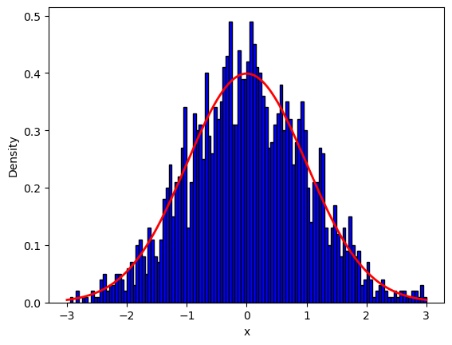
Example 2.1: simple example of Bayesian posterior
import matplotlib.pyplot as plt
distributions = {
"Prior": [1/3, 1/3, 1/3],
"Posterior given X = 2": [1/4, 1/2, 1/4],
"Posterior given X = 1": [2/3, 1/3, 0]
}
plt.rcParams.update({'font.size': 14})
fig, axes = plt.subplots(1, 3, figsize=(15, 5))
for i, (title, probs) in enumerate(distributions.items()):
axes[i].bar([1, 2, 3], probs, color=['blue', 'orange', 'green'])
axes[i].set_title(title)
axes[i].set_xticks([1, 2, 3])
axes[i].set_ylim(0, 1)
axes[i].set_xlabel('Theta')
axes[i].set_ylabel('Probability')
plt.tight_layout()
plt.show()
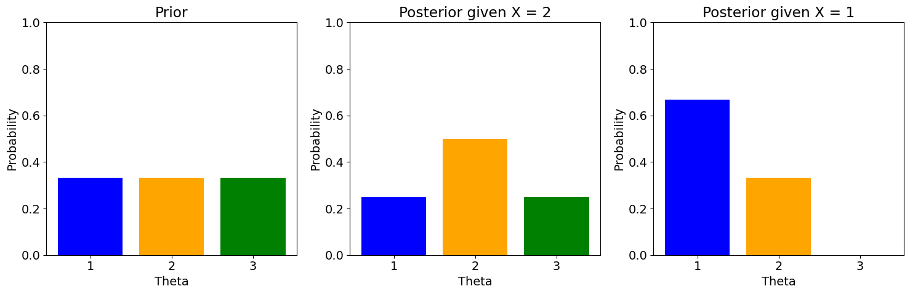
Example 2.2: posterior of binomial mean
import numpy as np
import matplotlib.pyplot as plt
from scipy.stats import beta
n = 50
num_heads = 2
a = 1 + num_heads
b = 1 + n - num_heads
x = np.linspace(0, 1, 1000)
y = beta.pdf(x, a, b)
plt.figure(figsize=(4, 3))
plt.plot(x, y)
plt.title(f"Posterior with {n} flips and {num_heads} heads")
plt.xlabel('x')
plt.ylim(0, np.max([y.max() * 1.2, 7]))
plt.show()
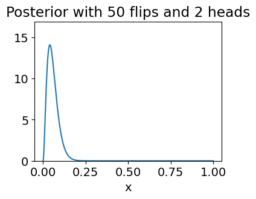
Additional example illustrating the notion of posterior
n_sim = 20000
m = 20
results = np.zeros((n_sim, 2))
for i in range(n_sim):
theta = np.random.uniform(0, 1)
S = np.random.binomial(m, theta)
results[i, 0] = theta
results[i, 1] = S
## simulated posterior given S = s
s = 8
conditional_thetas = results[results[:, 1] == s, 0]
num_instances = conditional_thetas.shape[0]
print(f"num instances with S = {s}: {num_instances}")
bin_width = 0.01
bins = np.arange(0, 1 + bin_width, bin_width)
## plot the histogram
weights = np.ones(num_instances) / num_instances
plt.hist(conditional_thetas, bins=bins, color='blue',
edgecolor='black', linewidth=1,
weights=weights)
plt.yticks(np.arange(0, 0.5, 0.05))
plt.xlabel('Theta')
plt.ylabel('Proportion')
plt.show()
## plot the discretized density
weights = weights/bin_width
plt.hist(conditional_thetas, bins=bins, color='blue',
edgecolor='black', linewidth=1,
weights=weights)
plt.yticks(np.arange(0, 6, 1))
plt.xlabel('Theta')
plt.ylabel('Density')
# overlay beta density
x = np.linspace(0, 1, 1000)
pdf = beta.pdf(x, a=s+1, b=m-s+1)
plt.plot(x, pdf, color='red', linewidth=2)
plt.show()
num instances with S = 8: 963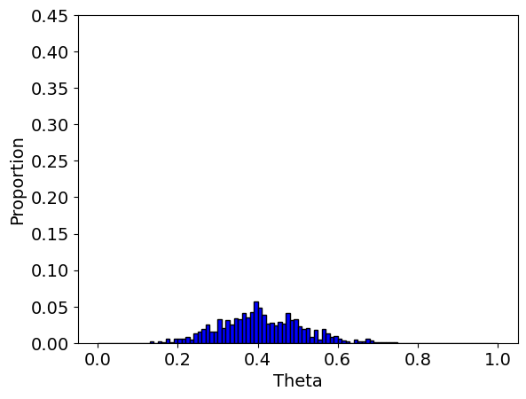
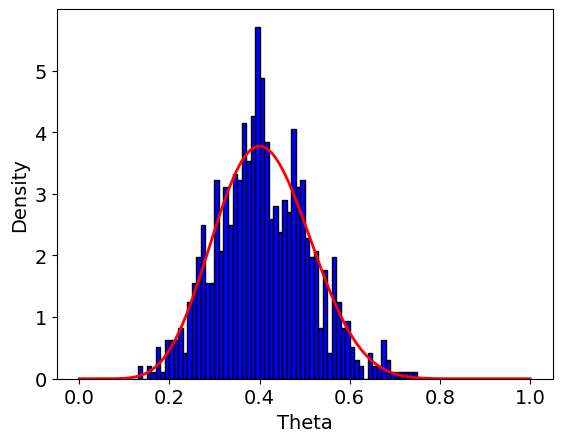
Example 2.3: posterior simulation for the 2020 election
import pandas as pd
import numpy as np
from scipy.stats import beta
# Read the CSV file
polls = pd.read_csv("election_polls.csv")
n_state = len(polls)
n_sim = 3000
all_results = np.zeros(n_sim)
bias_adjustment = 0.03
for cur_sim in range(n_sim):
all_thetas = np.zeros(n_state)
for j in range(n_state):
mu = polls.loc[j, "Percent Trump"] / 100 + bias_adjustment
n = polls.loc[j, "Sample Size"]
all_thetas[j] = beta.rvs(mu * n + 1, (1 - mu) * n + 1)
votes = (all_thetas > 0.5) * polls["Electors"]
all_results[cur_sim] = sum(votes)
print(f"Proportion of simulations where Trump wins: {np.mean(all_results > 269)}")
plt.figure(figsize=(4, 3))
plt.hist(all_results, bins=range(50, 500, 10))
plt.axvline(270, color='black', linestyle='--')
plt.xlabel('Electoral votes for Trump')
plt.show()--------------------------------------------------------------------------- FileNotFoundError Traceback (most recent call last) Cell In[5], line 6 3 from scipy.stats import beta 5 # Read the CSV file ----> 6 polls = pd.read_csv("election_polls.csv") 8 n_state = len(polls) 9 n_sim = 3000 File ~/anaconda3/envs/stat486/lib/python3.13/site-packages/pandas/io/parsers/readers.py:1026, in read_csv(filepath_or_buffer, sep, delimiter, header, names, index_col, usecols, dtype, engine, converters, true_values, false_values, skipinitialspace, skiprows, skipfooter, nrows, na_values, keep_default_na, na_filter, verbose, skip_blank_lines, parse_dates, infer_datetime_format, keep_date_col, date_parser, date_format, dayfirst, cache_dates, iterator, chunksize, compression, thousands, decimal, lineterminator, quotechar, quoting, doublequote, escapechar, comment, encoding, encoding_errors, dialect, on_bad_lines, delim_whitespace, low_memory, memory_map, float_precision, storage_options, dtype_backend) 1013 kwds_defaults = _refine_defaults_read( 1014 dialect, 1015 delimiter, (...) 1022 dtype_backend=dtype_backend, 1023 ) 1024 kwds.update(kwds_defaults) -> 1026 return _read(filepath_or_buffer, kwds) File ~/anaconda3/envs/stat486/lib/python3.13/site-packages/pandas/io/parsers/readers.py:620, in _read(filepath_or_buffer, kwds) 617 _validate_names(kwds.get("names", None)) 619 # Create the parser. --> 620 parser = TextFileReader(filepath_or_buffer, **kwds) 622 if chunksize or iterator: 623 return parser File ~/anaconda3/envs/stat486/lib/python3.13/site-packages/pandas/io/parsers/readers.py:1620, in TextFileReader.__init__(self, f, engine, **kwds) 1617 self.options["has_index_names"] = kwds["has_index_names"] 1619 self.handles: IOHandles | None = None -> 1620 self._engine = self._make_engine(f, self.engine) File ~/anaconda3/envs/stat486/lib/python3.13/site-packages/pandas/io/parsers/readers.py:1880, in TextFileReader._make_engine(self, f, engine) 1878 if "b" not in mode: 1879 mode += "b" -> 1880 self.handles = get_handle( 1881 f, 1882 mode, 1883 encoding=self.options.get("encoding", None), 1884 compression=self.options.get("compression", None), 1885 memory_map=self.options.get("memory_map", False), 1886 is_text=is_text, 1887 errors=self.options.get("encoding_errors", "strict"), 1888 storage_options=self.options.get("storage_options", None), 1889 ) 1890 assert self.handles is not None 1891 f = self.handles.handle File ~/anaconda3/envs/stat486/lib/python3.13/site-packages/pandas/io/common.py:873, in get_handle(path_or_buf, mode, encoding, compression, memory_map, is_text, errors, storage_options) 868 elif isinstance(handle, str): 869 # Check whether the filename is to be opened in binary mode. 870 # Binary mode does not support 'encoding' and 'newline'. 871 if ioargs.encoding and "b" not in ioargs.mode: 872 # Encoding --> 873 handle = open( 874 handle, 875 ioargs.mode, 876 encoding=ioargs.encoding, 877 errors=errors, 878 newline="", 879 ) 880 else: 881 # Binary mode 882 handle = open(handle, ioargs.mode) FileNotFoundError: [Errno 2] No such file or directory: 'election_polls.csv'
Example 2.4: MCMC for posterior from pairwise comparison
import pandas as pd
import numpy as np
# Load the data
games = pd.read_csv("nba2024.csv")
n_games = len(games)
# Get all team names
teams = pd.unique(games[['Winner', 'Loser']].values.ravel('K'))
n_teams = len(teams)
# Initialize ratings and all_ratings dictionaries
ratings = {team: np.random.choice([1, 2, 3]) for team in teams}
all_ratings = {team: [] for team in teams}
n_MCMC = 1100
n_Burn = 100
SAprob = 0.7
SBprob = 0.9
ABprob = 0.7
sameprob = 0.5
# MCMC Simulation
for j in range(n_MCMC):
for cur_team in teams:
weights = np.ones(3)
for i in range(n_games):
if cur_team not in [games.iloc[i, 0], games.iloc[i, 1]]:
continue
opponent = games.iloc[i, 1] if cur_team == games.iloc[i, 0] else games.iloc[i, 0]
opponent_rating = ratings[opponent]
## if cur_team is the winner
if cur_team == games.iloc[i, 0]:
if opponent_rating == 1:
weights *= [sameprob, 1-SAprob, 1-SBprob]
elif opponent_rating == 2:
weights *= [SAprob, sameprob, 1-ABprob]
else:
weights *= [SBprob, ABprob, sameprob]
else: # if cur_team is the loser
if opponent_rating == 1:
weights *= [sameprob, SAprob, SBprob]
elif opponent_rating == 2:
weights *= [1-SAprob, sameprob, ABprob]
else:
weights *= [1-SBprob, 1-ABprob, sameprob]
ratings[cur_team] = np.random.choice([1, 2, 3], p=weights/weights.sum())
if j > n_Burn:
all_ratings[cur_team].append(ratings[cur_team])
# Printing the results
for cur_team in teams:
cur_posterior = np.zeros(3)
for j in range(3):
cur_posterior[j] = np.mean(np.array(all_ratings[cur_team]) == j+1)
## create small plot
plt.figure(figsize=(3, 1))
plt.bar([1, 2, 3], cur_posterior, color=['blue', 'orange', 'green'])
plt.title(f"Posterior rating for {cur_team}")
plt.show()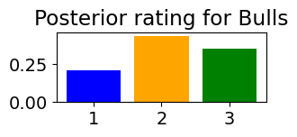
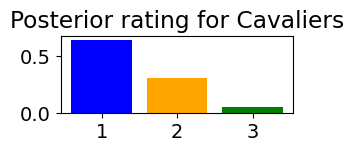
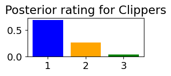
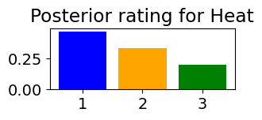
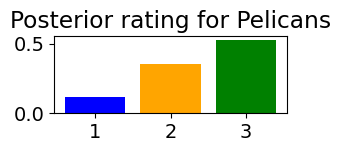
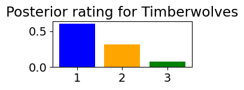
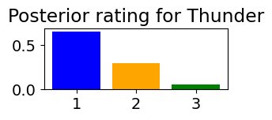
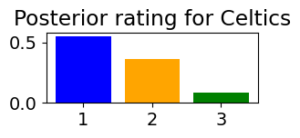
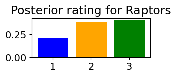
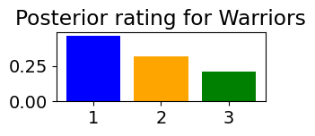
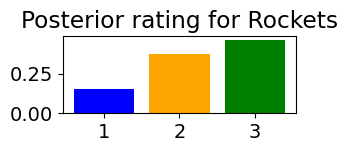
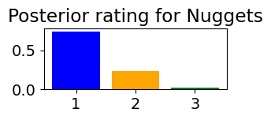
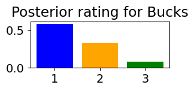
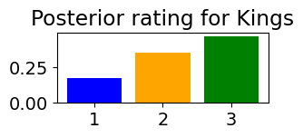
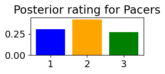
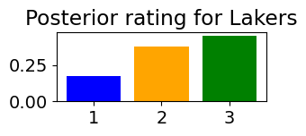
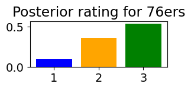
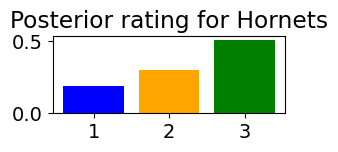
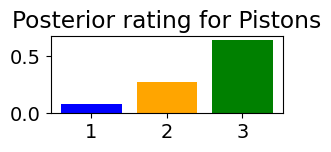
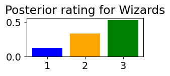
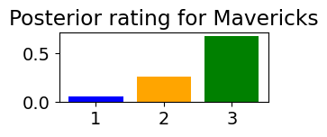
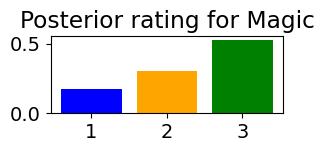